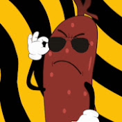

Van EGY KÉRDÉSE? ↓
Kolbászok, Hurkák, Virslik


Tóth Geri Kolbászboltja
* MOSTMÁR CSAPTELEP IS ELÉRHETŐ! *
Van EGY KÉRDÉSE? ↓
Kolbászok, Hurkák, Virslik
Minden terméket itt készítünk el a saját receptünkből.
Szívből, lélekből!
- Saját Termék! -
Házi Kolbász
- Saját Termék -
Házi Kolbász
Minden egyes darabot gondos odafigyeléssel, házon belül készítünk, egy olyan recept alapján, amit hosszú hónapokon át finomítottunk – éppen azért, hogy mindenki megtalálja benne a saját kedvenc ízjegyét.
A kolbász ízvilága kifinomult, mégis karakteres – enyhén füstös, kellemesen fűszeres, de nem tolakodó. Pont olyan, amit szívesen megosztanál valakivel... vagy nem.
Tálalva extra mustáros házi szósszal, ami egy kicsit édeskés, egy kicsit pikáns, de teljesen egyedi. Mellé friss, roppanós zöldségek, némi savanyított finomság (ami szezonálisan változik), és 1–2 szelet puha, rusztikus kenyér, az adag nagyságától függően.
- Saját Termék! -
Kilbi Kolbi
- Saját Termék -
Kilbi Kolbi
Minden egyes darabot gondos odafigyeléssel, házon belül készítünk, egy olyan recept alapján, amit hosszú hónapokon át finomítottunk – éppen azért, hogy mindenki megtalálja benne a saját kedvenc ízjegyét.
A kolbász ízvilága kifinomult, mégis karakteres – enyhén füstös, kellemesen fűszeres, de nem tolakodó. Pont olyan, amit szívesen megosztanál valakivel... vagy nem.
Tálalva extra mustáros házi szósszal, ami egy kicsit édeskés, egy kicsit pikáns, de teljesen egyedi. Mellé friss, roppanós zöldségek, némi savanyított finomság (ami szezonálisan változik), és 1–2 szelet puha, rusztikus kenyér, az adag nagyságától függően.
- Saját Termék! -
Virsli Disznótorral
- Saját Termék! -
Virsli Disznótorral
Az ünnep minden falatja: a Virsli Disznótorral visszarepít a falusi disznótor hangulatába, ahol mindenki együtt nevet, eszik és élvezi az életet. A kulcs a minőségi, lédús virsliben rejlik, amit gondosan füstölünk, hogy a füst íze ne nyomja el a hús zamatait.
A virsli mellett omlós, ropogós szalonnaszeletek, édes hagymalekvár csipetnyi köménymaggal és friss, héjában sült burgonyaszeletek várnak. Az erdei gombaöntet, amellyel koronázunk, mély, földes aromákat hoz, míg a ropogós kenyérrel és házi kovászos uborkával az élmény minden eleme harmonikusan illeszkedik
Tálalási tipp: rendezd el egy nagy, közös tálban, hogy mindenki kedve szerint halászhasson a legjobb falatokból.
- Saját Termék! -
Véres Májas Kolbász
- Saját Termék! -
Véres Májas Kolbász
A Véres Májas Kolbász azoknak szól, akik nem félnek a sötét ízélményektől. Ez a kolbász a hurkakészítés művészetét a belsőségek krémes simogatásával és a vér testes karakterével ötvözi.
A titok a tökéletes textúrában rejlik: a máj sima, krémes belseje és a vér mély, enyhén fémes íze egyensúlyban van a majoranna, a frissen őrölt bors és a szerecsendió finoman fűszeres jegyeivel. Minden szelet után párolt alma-csíkok és pirított hagymafenyő gondoskodik arról, hogy a gazdag élmény könnyed, gyümölcsös akcentust kapjon.
Tálalási tipp: meleg tejföllel, friss zöldfűszerekkel (kapor, petrezselyem), és néhány csepp balzsamecet.
- Saját Termék! -
Négyévszak Kolbász
- Saját Termék! -
Négyévszak Kolbász
A Négyévszak Kolbász négy külön kolbászt egyesít egy rúdon, hogy egyetlen harapással végigélvezhesd az évszakok ízskáláját. Ez az igazi ízforradalom: tavaszi, nyári, őszi és téli ízek egymásba fonódva, tökéletessé kovácsolva.
Ez a különlegesség a tavaszi kolbász fűszeres frissességét, a nyári kolbász paradicsomos, piknikhangulatot idéző gazdagságát, az őszi kolbász gombás, erdős mélységeit és a téli kolbász füstölt szalonna-melegét tökéletes ízharmóniába olvasztja, hogy minden harapás egy szezonális utazássá váljon.
Egyszerre válaszd őket egy tálon, vagy kóstold külön-külön – a Négyévszak Kolbász minden formában ünnep.
- Saját Termék! -
Négyévszak Kolbász
- Saját Termék! -
Négyévszak Kolbász
A Gyulai Kolbász nálunk nem csak egy hagyomány, hanem egy gondosan újragondolt élmény – minden egyes darabot saját recept alapján, helyben készítünk, figyelve minden apró részletre. A füstölt íz dominál, de nem túlzó: inkább mély, lassan kibomló, amit a paprika és fokhagyma egyensúlya tesz igazán teljessé.
A textúra az egyik legnagyobb erőssége: kívül enyhén roppan, belül szaftos és telt, minden falat karakteres, mégis letisztult. Akár magában, akár egy tartalmasabb étkezés részeként is tökéletes választás.
Tálalva saját párolt hagymás szósszal, friss petrezselyemmel, némi kovászos uborkával, és pár szelet puha kenyérrel – de igény szerint kérhető mellé egy kis csípős lilahagymalekvár is, ami még mélyebbre tolja az ízeket.
Dárdás Piknikrúd
4.390- Ft
Dárdás Piknikrúd
Minden egyes darabot gondos odafigyeléssel, házon belül készítünk, egy olyan recept alapján, amit hosszú hónapokon át finomítottunk – éppen azért, hogy mindenki megtalálja benne a saját kedvenc ízjegyét.
A kolbász ízvilága kifinomult, mégis karakteres – enyhén füstös, kellemesen fűszeres, de nem tolakodó. Pont olyan, amit szívesen megosztanál valakivel... vagy nem.
Tálalva extra mustáros házi szósszal, ami egy kicsit édeskés, egy kicsit pikáns, de teljesen egyedi. Mellé friss, roppanós zöldségek, némi savanyított finomság (ami szezonálisan változik), és 1–2 szelet puha, rusztikus kenyér, az adag nagyságától függően.
Bratwurst
Bratwurst
Az Bratwurst mindenekelőtt a német vásárok, Biergartenek és utcai ínyencségek megtestesítője – most azonban egy igazán különleges találkozást kínálunk: a hagyományos, selymes belső és a lágy héj megmaradt, de Tóth Gergő-féle magyar csavart kapott.
A kolbász alapját a klasszikus fehér hús adja, amit gondosan őrzött, százéves recept szerint készítünk elő. A magyar csavar egy cseppnyi pirospaprika és egy leheletnyi fokhagyma hozzáadásában rejlik, így megőriztük a bratwurst ikonikus ízkarakterét, miközben egy friss, enyhén csípős felhangot varázsoltunk bele. A ropogós, enyhén sós héj mögött lágy, illatos állag bújik meg, ami minden falatot ünneppé avat.
Tálalási tipp: kézműves mustárral, házi savanyúsággal (uborka, lilahagyma), és egy jó adag frissen sült krumplival.
Csabai Csemege Snack Kolbász
Csabai Csemege Snack Kolbász
A Csabai Csemege Snack Kolbász nem csupán étel – ez egy új életstílus. Minden falatnál érzed, hogy ez nem csak kolbász: ez egyfajta szemléletváltás, egy apró, de jelentős döntés a jobb ízek felé.
Kívül enyhén kérges, belül omlós és szaftos, az ízvilága karakteres, de mégis játékos. Pont olyan, amit bekapsz két nagyobb falat között, vagy amikor csak egy kis kolbászos nasi kell, hogy átvészeld a napot.
Ha pedig komolyabban gondolod, teljes menüben is kérhető, ilyenkor mellé ropogós virsli is érkezik, sőt, egy opcionális véres hurka is felkerülhet a tányérra – csak a bátraknak. A kísérő továbbra is ugyanaz: házi mustáros szósz, friss zöldségek, és a jól bevált puha, rusztikus kenyér.

Gyulai Sertéskolbász
Gyulai Sertéskolbász
A Gyulai Kolbász nálunk nem csak egy hagyomány, hanem egy gondosan újragondolt élmény – minden egyes darabot saját recept alapján, helyben készítünk, figyelve minden apró részletre. A füstölt íz dominál, de nem túlzó: inkább mély, lassan kibomló, amit a paprika és fokhagyma egyensúlya tesz igazán teljessé.
A textúra az egyik legnagyobb erőssége: kívül enyhén roppan, belül szaftos és telt, minden falat karakteres, mégis letisztult. Akár magában, akár egy tartalmasabb étkezés részeként is tökéletes választás.
Tálalva saját párolt hagymás szósszal, friss petrezselyemmel, némi kovászos uborkával, és pár szelet puha kenyérrel – de igény szerint kérhető mellé egy kis csípős lilahagymalekvár is, ami még mélyebbre tolja az ízeket.
Debreczeni Pároskolbász
Debreczeni Pároskolbász
A Debreczeni Pároskolbász nem egyszerű kolbász, hanem két karakter találkozása egyetlen élményben: a vékonyabb, fűszeresebb rudacska és a vastag, enyhén édeskés társ tökéletes harmóniában sül meg a tányérodon. A receptünkben szereplő titkos házi fűszerkeverék egy szinttel magasabbra teszi a lécet.
A vékonyabb rúd fűszerpaplanja ad egy frissítő kezdetet a pirospaprika, bors és fokhagyma könnyed kavalkádjával, míg a vastagabb rúd zárása egy simogató, enyhén édeskés utóíz, ami finoman kiegyensúlyozza a fűszeres robbanást.
Tálalási tipp: meleg, frissen sült kovászos baguette vagy házi kenyér, néhány szelet savanyított cékla, és egy csipetnyi pirított tökmag teszi teljessé az ízképet. Ez a kolbász kiváló vendégváró, tapas jellegű kóstolókészlet vagy akár egy tartalmas reggeli sztárja.
kilbikolbi
kilbikolbi
kilbikolbi
kilbikolbi
Hozzászólások a szolgáltatásainkról
⭐KIEMELT HOZZÁSZÓLÁS⭐

@dr_jozsef_andor_phd.szepeszeti_gepeszetben
★★★★★ (5,0)
Soha, ismétlem: soha nem gondoltam volna, hogy egy kolbász – egy egyszerű, látszólag hétköznapi kolbász – képes lesz arra, amire Tóth Geri mesterműve képes volt. Az életem egy íztelen, monotóniával átitatott rutinná vált az utóbbi években. Az étkezés szükségszerűség volt, nem élvezet. A boltban vásárolt ipari kolbászok íze fás, művi és lélektelen – úgy éreztem, mindennek vége.
Aztán jött Ő.
Nem tudom, mi vett rá, hogy betérjek a boltba. Talán egy isteni sugallat, egy nesz a szélben, vagy csak a kíváncsiság utolsó cseppje. De amit ott kaptam, az túlmutatott minden földi fogalmon. A kolbász nem csupán étel volt. Transzcendens élmény. Minden harapásnál éreztem a hagyományt, a gondoskodást, a szenvedélyt. A fűszerek, mint titkos szimfónia, keringőztek az ízlelőbimbóimon. A textúra – tökéletes. A füst – mennyei. A csípős változat – egy filozófiai kérdéseket felvető, mélyen spirituális utazás.
Azóta máshogy látom a világot. Minden döntésem előtt felteszem magamnak a kérdést: „Mit tenne Tóth Geri kolbásza?” Nem viccelek. Ez az egyetlen étel, amit reggelire, ebédre, vacsorára, és – ha tehetném – meditáció közben is fogyasztanék. Szüleim is megkönnyezték. A kutyám, aki válogatós, térdre rogyott. A szomszédom – vegetáriánus volt – megtért.
Ez nem kolbász. Ez identitás. Ez remény. Ez: Tóth Geri Kolbászboltja.
Kérem, aki ezt olvassa, ne habozzon. Menjen el. Vásároljon. Tapasztalja meg. Változzon meg.
@tgerikolbasz_legnagyobbfan ★★★★☆ (4,5)
kolbasz jo, kiszolgalas jo, varni kellett picit de nem baj
@2021_sakk_orszagbajnok
★★★★★ (5,0)
kis bolt, nagy élmény! már harmadszor jöttem, most már törzsvásárló vagyok 😄 a karácsonyi szezonra is innen szerzünk be mindent, család full odáig van.
@ibizai_kirandulo_minion
★★★★★ (5,0)
Régóta ettem már ilyen jó kolbászt. Azóta minden szendvicsbe csak ebből teszek. Reggelire, ebédre, vacsira. Még álmodtam is róla. Komolyan.
@cr7fan2013
★★★★★ (5,0)
jo bolt, jokat rohogtem a pultos srac viccein is. +1 pont a hangulatért
@your_average_common_w
★★★★★ (5,0)
toth gergő a nemzet hőse szerintem. ilyen kolbasz nincs meg egyszer. koszonom hogy vagy.
@zoli_from_oblock
★★★★☆ (4,5)
9/10 a kolbasz tesver kicsit sos
@kinai_lasagnes_szalami
★★★★★ (5,0)
az a zoli from oblock miért lopja a profilomat? amúgy jó a kolbi és a hurka. a véres hurka nekem már nagyon durva volt de az csak személyi ízlés
@sefek_sefe_viktor
★★★★★ (5,0)
Ízek harmóniája, hagyomány és innováció egy helyen. Meglepett, mennyire kifinomult lehet egy egyszerű kolbász is. Ilyen szintű ízvilágot utoljára egy vidéki disznótoron éreztem 1998-ban. Köszönöm.
@szlamb_official
★★★★☆ (4,0)
Feltekennye tette mutert amikor masodjara jelentem meg otthon ezekkel a kolbaszokkal ugyhogy el lettem fenekelve de amugy rohadtjok
@szekelyzoltan
★★★★★ (5,0)
Valami elképesztő ez a bolt. Tóth Gergő egy zseni. Minden alkalommal mást próbálok ki, és még soha nem csalódtam. A házi mustáruk külön misét érdemel, de a fokhagymás kolbász... hát az valami mennyei! Azóta is minden ismerősömnek ezt ajánlom.
@madmax_madmax27
★★★★★ (5,0)
szajbacseszett jo. no joke. vettem 2 virslit, 1 hurkat es 1 kolbaszt. el tudod kepzelni, 3 perc mulva ures volta tanyerom. durva
@spari_testver_a_jovobol
★★★★☆ (4,5)
egyik kedvenc helyem. kedvencem fajtám a csipős, bár anyámnak túl erős már XD de nekem 10/10, anyám miatt kellett azt a fél csillagot levonnom. alapból 5 csillag lenne
@paprikasbetyar1993
★★★★★ (5,0)
Baratnom emlitette hogy jojjunk el ide. Kecskemetiek vagyunk de azt mondta nagyon megeri annak ellenere hogy picit draga. Nekem a picit draga azt jelentene hogy 5-10 ezer egy kolbasz de nem. Arak full korrektek baratnom valszeg a 10 evvel ezelotti korszakban ragadt amikor meg 500ft volt egy kolbasz.
@magyarpeti_labgombaja
★★★★★ (5,0)
Tompahát... Egy jelentéktelen település a semmi közepén, néhányak szerint már szemétdomb a sivatag közepén. Még saját irányítószámuk sincs, és Tóth Geri Kolbászboltja mégis képes volt a legtöbbet kihozni a semmiből.
Viszont úgy hallottam, hogy néhány kolbászuk tartalmaz emberhúst is ami elég ijesztő... 😬
Viccelek😅 úgy hallottam, hogy saját mangalicákból csinálják a kolbászokat ami nálam plusz pont!